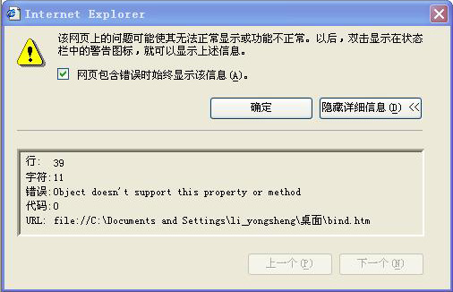
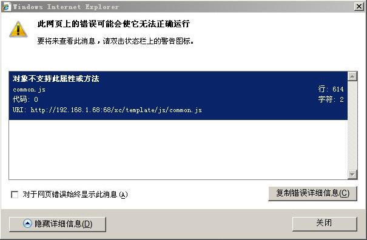
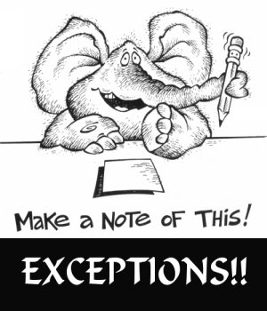

作为前端工程师，看到上面的异常，我们该如何进行排查？
- 根据异常所在文件及其异常所在行，找到引发异常的相关代码附近， 对代码进行分析？
- 然后呢？就只能依靠我们以往的经验进行猜测和尝试了。
- 没有这个异常的相关经验？哪有这么巧的事情？好吧，那你悲剧了。
- 呃，Google 吧，也许 Bing 或 Baidu 也有点答案。
- 试过了各种各样的关键词，打开了 N 多个 tab 页。。。
- 然后也许你搜索到了散落在 MSDN，CSDN，蓝色理想，某某个人博客的一些只言片语？
- 看到楼主给出的好多行无关代码，接下来是其他热心观众的猜测，试试这个、试试那个。
- 还是不行啊，急，在线等。
- 然后就没有了然后。。。

各位同学，我们在排查调试 JavaScript 异常时，是不是经常感觉到乏力呢？
- JavaScript 作为一门弱类型动态编程语言，在调试、排查异常方面一直都非常薄弱。
- 客户端浏览器种类、版本、用户语言环境繁多，同样一个异常，在不同浏览器中表现和反馈都不同。
- 尤其面对某某大牌浏览器厂商埋下高质量的坑，一般人还真没办法发现或解决。
- 每个浏览器厂商的开发者文档或社区都是独立的，各种异常文档或分享散落各个社区或者个人博客中。
凡此种种，我都觉得有必要建立这样的一套异常档案，他可以：
- 对于已知或未知的 JavaScript 异常，都存档有对应的异常信息、场景上下文、源码片段、 对应的分析说明、及核心异常代码演示。
- 长久的存在，不因时间的流逝、博客的关闭、URL 的变更等等原因而消逝。
- 开放，分享和交流每个人的异常分析经验，让异常分析经验和知识更为普及和提升。
因此，我们在 Github 上初步建立了一个 『 JavaScript 异常档案 』 的开源项目。任何人都可以 fork、提交 issues、评论、邮件、或社区推广等各种方式来参与。
等一下，你突然发现了这么一个页面： 对象不支持此属性或方法 @github 这个页面里有这个异常在各个语种下的异常消息描述，同一个异常代码在不同浏览器里的 详细分析，还有有血有肉的实际案例分析，关键代码，实际异常演示页，，， 可能还很不完善，还需要我们一起来参与，但是泪奔的感觉有木有~
希望有一天：
- 我们遇到的脚本异常都可以在这个档案中找到原因、解决或规避的方案。
- 我们分析的脚本异常都可以出现在这个档案中以惠及他人。
最良好的祝愿！
